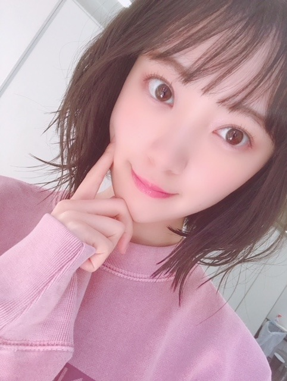

2018/0813Mon甘さが勝つの。
アップルパイのはなし！
最近食べたアップルパイは
酸っぱさよりも甘さを凄く感じました
甘党じゃないけど品のある甘さは
たまの幸せだな〜って。
さてさて
京都での個別握手会、
ありがとうございました！
帰りにほうじ茶アイス食べたけど
日本茶は改めてステキなものだと確信しました。
調子に乗って1部からたくさん話していたら
親知らずが完治していなくて激痛で...
ご心配をおかけしました> <

ファンの女の子がお花と一緒にくれたくまさん
名前はね、うーん
何にしようかな
モルディブちゃん！
笑
SNIDELさんの新作の
スウェットとスカート
一目惚れしました
お気に入り！

夏はぴたっと。秋冬はゆるっと。が好き
サンダルはMorie femme
シルバーグレーで使いやすくて
よく履いています☆☆

お花も

たくさんありがとうございました！

今週の水曜日レコメン！は
のりさんがお休みの為
絢音と2人のすずほりコンビでお届けします♡
楽しみ
完全に素だろうなぁ。笑
聞いてくださいね〜
では！
2018/08/13 17:30
コメント(485)
未央奈ちゃんおはようございます‼ありがとうございます！今年もありがとうございます！楽しみにしてます‼頑張ります‼頑張って下さい
コメント失礼します！
みおな可愛すぎる〜(^ ^)
レコメンきいたぜよ！
ブログ更新ありがとう
みおな可愛すぎる〜(^ ^)
レコメンきいたぜよ！
ブログ更新ありがとう
ブログ更新ありがとう(≧▽≦)握手会お疲れ様(≧▽≦)レコメン楽しかった(≧▽≦)来週もほり鈴コンビ楽しみ(≧▽≦)
やぁ(・∀・)ノ未央奈ちゃん♡こんばんは！
りょーへー(R.N.イナダウアーびーむ)だよ♪
今、まさに風を感じてるよ！にしても、風が強すぎやありまへんか！駅で電車待ちをしてるんだけど、ありえんくらいの強風！テレビの罰ゲームとかで見たことがあるくらいの強風だと思う！笑 あと、秋はまだ先じゃないかな…？秋よりも前に、台風が来るらしい！
プティくん、ニコルくん、2匹の可愛い寝顔が見られるなんて、最高すぎやん？ちょこっと写ってる未央奈ちゃんも可愛すぎる！このお写真は、めちゃくちゃほっこりするよ！！！
未央奈ちゃんの、何にも負けないぞ！って気持ちは素敵だし、だからこそ、応援したくなるんだよ！手を取り合う先はいくつもあるけど、俺らファンの所もあるからね♪
#毎日コメント
#今日もお疲れ様
#桃いいなぁ
#プリンも羨ましい
#どっちもめっちゃ美味しいものやん
#メールのお写真
#オシャレだね
#雰囲気も
#未央奈ちゃんも
#明日も楽しみおな♡
#おやすみおな(^-^)ゝ゛
りょーへー(R.N.イナダウアーびーむ)だよ♪
今、まさに風を感じてるよ！にしても、風が強すぎやありまへんか！駅で電車待ちをしてるんだけど、ありえんくらいの強風！テレビの罰ゲームとかで見たことがあるくらいの強風だと思う！笑 あと、秋はまだ先じゃないかな…？秋よりも前に、台風が来るらしい！
プティくん、ニコルくん、2匹の可愛い寝顔が見られるなんて、最高すぎやん？ちょこっと写ってる未央奈ちゃんも可愛すぎる！このお写真は、めちゃくちゃほっこりするよ！！！
未央奈ちゃんの、何にも負けないぞ！って気持ちは素敵だし、だからこそ、応援したくなるんだよ！手を取り合う先はいくつもあるけど、俺らファンの所もあるからね♪
#毎日コメント
#今日もお疲れ様
#桃いいなぁ
#プリンも羨ましい
#どっちもめっちゃ美味しいものやん
#メールのお写真
#オシャレだね
#雰囲気も
#未央奈ちゃんも
#明日も楽しみおな♡
#おやすみおな(^-^)ゝ゛
みおな こんばんは！
久しぶりの仕事…
終わったら、やっぱり飲みに行ってしまった！
そのあとはカラオケ…
バレッタが一番上手く歌えたかな？
当然と言えば当然だけどね！！
久しぶりの仕事…
終わったら、やっぱり飲みに行ってしまった！
そのあとはカラオケ…
バレッタが一番上手く歌えたかな？
当然と言えば当然だけどね！！
みおなちゃんピンク可愛い 全力で応援しますよ
親知らず大丈夫?無理しないで仕事頑張ってね。
未央奈やほー！明日から部活だー！頑張るぞ！未央奈も頑張ろうぜ！簡単じゃないものを簡単に乗り越えて自分のモノにできるくらい器用になりたいよねー、ほんとに思うでもまずは壁を簡単じゃなくても乗り越えなきゃだよね、大変だー笑笑未央奈いつも真面目で、そんなとこが好きよ笑おやすみ！
未央奈ー❤️
こんばんは
ホントにアップルパイが好きなんですね♪
私は、甘党です(￣^￣)ゞ
先日、一人で「万引き家族」を観てきました
切ないけど、
家族や人の愛の形はそれぞれにあって
目に見えているものが、全てとは限らない。
観終わって、そう感じました。
考えさせられました◎
個握の素敵な写真、ありがとう♪
かわいいです！
絢音さんとの755の動画、
2人で楽しそうで、
嫌な事があっても元気になれる！
ありがとう◎
おやすみなさい☆彡
また！
ホントにアップルパイが好きなんですね♪
私は、甘党です(￣^￣)ゞ
先日、一人で「万引き家族」を観てきました
切ないけど、
家族や人の愛の形はそれぞれにあって
目に見えているものが、全てとは限らない。
観終わって、そう感じました。
考えさせられました◎
個握の素敵な写真、ありがとう♪
かわいいです！
絢音さんとの755の動画、
2人で楽しそうで、
嫌な事があっても元気になれる！
ありがとう◎
おやすみなさい☆彡
また！
堀さん、こんばんは。
ＥＸ大衆を見ました。表紙がまず大人っぽいし、昼寝前？に真剣にゆで卵をむく姿も凛々しいです。シアタールームで映画に入り込んでしまう流れも面白かったです。写真で一番好きなのはブランコみたいな椅子での無邪気な笑顔です。
インタビューも濃かったです。「大人への近道」当時の話を踏まえつつ、「志乃ちゃんは自分の名前が言えない」への堀さんの７５５での感想を見たら胸が痛くなります。
以前モバメで「みんな自分自身を好きになってほしい」って言ってたじゃないですか。それで、理想と現実のギャップを自分のせいにしてほっといたときに自分を嫌いになるんだろうなって思ったんです。だから、理想を改めるか自分以外のせいにするか現実を変えるかのどれかをすれば嫌いにならなくてすむんですよね。でも、現実が変わらないように見える時は気持ちを維持するのが難しくて、そんな時には、ＥＸ大衆のインタビューのように少しずつ変わってるって思ったり、今日のモバメのように仲間と助け合ったりすればいいってことなんですね。
堀さんのポジティブさにいつも救われます。ありがとうございます。
まだ暑い日も続くみたいなので無理はしないでくださいね。心も無理をしないようにちゃんと周りに甘えてください。根拠ゼロですけど、甘いプリンを食べるということは甘えたい願望の表れなのです。
ＥＸ大衆を見ました。表紙がまず大人っぽいし、昼寝前？に真剣にゆで卵をむく姿も凛々しいです。シアタールームで映画に入り込んでしまう流れも面白かったです。写真で一番好きなのはブランコみたいな椅子での無邪気な笑顔です。
インタビューも濃かったです。「大人への近道」当時の話を踏まえつつ、「志乃ちゃんは自分の名前が言えない」への堀さんの７５５での感想を見たら胸が痛くなります。
以前モバメで「みんな自分自身を好きになってほしい」って言ってたじゃないですか。それで、理想と現実のギャップを自分のせいにしてほっといたときに自分を嫌いになるんだろうなって思ったんです。だから、理想を改めるか自分以外のせいにするか現実を変えるかのどれかをすれば嫌いにならなくてすむんですよね。でも、現実が変わらないように見える時は気持ちを維持するのが難しくて、そんな時には、ＥＸ大衆のインタビューのように少しずつ変わってるって思ったり、今日のモバメのように仲間と助け合ったりすればいいってことなんですね。
堀さんのポジティブさにいつも救われます。ありがとうございます。
まだ暑い日も続くみたいなので無理はしないでくださいね。心も無理をしないようにちゃんと周りに甘えてください。根拠ゼロですけど、甘いプリンを食べるということは甘えたい願望の表れなのです。
おはようございます。
久しぶりにコメント。
元気かい？
まだ暑いけど、少し和らいだかな？
でも暑いね。(笑)
来週台風来るみたいやし！
今もライヴや握手会で大変やろう？
体調管理はしっかりとね！
ピンク好きやなぁ～(笑)
でも可愛い！
っていうかベッピンさんや。
最近コンビニとかで少し勇気もってar見てます。
買うの少し恥ずかしいからごめんね！
堀ちゃんと欅坂のずーみんちゃんのコラボ見たいな！
個人的感想ね。
見たい人多くないかな？
ではでは、またね！
堀ちゃん。
ジコチューでいこう～。
頑張りや！
久しぶりにコメント。
元気かい？
まだ暑いけど、少し和らいだかな？
でも暑いね。(笑)
来週台風来るみたいやし！
今もライヴや握手会で大変やろう？
体調管理はしっかりとね！
ピンク好きやなぁ～(笑)
でも可愛い！
っていうかベッピンさんや。
最近コンビニとかで少し勇気もってar見てます。
買うの少し恥ずかしいからごめんね！
堀ちゃんと欅坂のずーみんちゃんのコラボ見たいな！
個人的感想ね。
見たい人多くないかな？
ではでは、またね！
堀ちゃん。
ジコチューでいこう～。
頑張りや！
なめらかなプリンを食べますたヾ(=ﾟ･ﾟ=)ﾉﾆｬﾝ♪乗り越えてポジピースの堀殿ふぁいとιον∈ Υου.....φ(〃∇〃 )))
未央奈…
未央奈ちゃんおはよう！モバメの答えやけど、未央奈ちゃんなら桃は必ずもってくるかな？あと１つはたぶんフルーツ。
今日も頑張ろー
今日も頑張ろー
モバメのお弁当の答え→おにぎりとおかずの２種類！
からあげ・玉子焼きとか入ってると思う！
からあげ・玉子焼きとか入ってると思う！
未央奈ちゃん、ひろっしーです！コメント投稿492回目です！
前回はモバメの感想を書きました！
時間→「No.436 2018年8月15日 23:57」
モバメ毎日ありがとうございます！
昨日は凄く涼しくて本当に秋みたいでしたね！
簡単に見えても簡単じゃない事って確かに沢山ありますよね！今だったら凄く分かります！
これは働き始めてすぐの頃なんですが、作業の手順を教えてもらっても実際やってみたら先輩みたいにスムーズに出来ない事がありました！病院でヘルパーとして働き始めて4年目ですが日々思います！女性って凄いなって！本当に！
・シフトによって僕以外女性の日がある
・年齢層の幅も凄く広くて20代～60代
ベテランの女性の方は勿論、年下の女性も凄くしっかりされていて(汗) 頑張るしかないね！
難しい事でも吸収して自分の物にしようとする強い思い、凄く感心しました！あと、手を取り合う事は凄く大事だと思います！微力ですが、どんどん甘えてください！何があっても未央奈ちゃんの味方です！これからも応援するぞ～！
今日も晴れ！遠足日和の良い天気ですね！
お弁当ですが、2つだけじゃ分からないよ(笑)
755のニコルくんとプティくんの寝顔可愛い！「レコメン！」前の動画、下からミオナや～！投げキッスも凄く嬉しかったです！本番も素の2人のトークが聴けて最高の時間でした！
ここまで読んで頂きありがとうございました！
毎日お仕事お疲れ様です！体調にはくれぐれも気を付けて頑張ってくださいね！
ではでは！
前回はモバメの感想を書きました！
時間→「No.436 2018年8月15日 23:57」
モバメ毎日ありがとうございます！
昨日は凄く涼しくて本当に秋みたいでしたね！
簡単に見えても簡単じゃない事って確かに沢山ありますよね！今だったら凄く分かります！
これは働き始めてすぐの頃なんですが、作業の手順を教えてもらっても実際やってみたら先輩みたいにスムーズに出来ない事がありました！病院でヘルパーとして働き始めて4年目ですが日々思います！女性って凄いなって！本当に！
・シフトによって僕以外女性の日がある
・年齢層の幅も凄く広くて20代～60代
ベテランの女性の方は勿論、年下の女性も凄くしっかりされていて(汗) 頑張るしかないね！
難しい事でも吸収して自分の物にしようとする強い思い、凄く感心しました！あと、手を取り合う事は凄く大事だと思います！微力ですが、どんどん甘えてください！何があっても未央奈ちゃんの味方です！これからも応援するぞ～！
今日も晴れ！遠足日和の良い天気ですね！
お弁当ですが、2つだけじゃ分からないよ(笑)
755のニコルくんとプティくんの寝顔可愛い！「レコメン！」前の動画、下からミオナや～！投げキッスも凄く嬉しかったです！本番も素の2人のトークが聴けて最高の時間でした！
ここまで読んで頂きありがとうございました！
毎日お仕事お疲れ様です！体調にはくれぐれも気を付けて頑張ってくださいね！
ではでは！
ほりっぴ～、ナンチです♪
おはようさん
秋晴れっぽくて気持ちいいね
温泉の朝風呂が気持ちよすぎたよ
ほりっぴ～のお弁当
梅としゃけのおにぎり
たまごサンドイッチ
どう？
おはようさん
秋晴れっぽくて気持ちいいね
温泉の朝風呂が気持ちよすぎたよ
ほりっぴ～のお弁当
梅としゃけのおにぎり
たまごサンドイッチ
どう？
素の未央奈見たいな～＼(^_^)(^_^)／
こんにちは～
今日も、、爽やかに、、晴れたね〜
この前、、ちょっと面白い映画を、、見たよ〜
、、ロブスター、、（笑）っていう、、恋愛ＳＦ映画、、（笑）
、、カンヌ国際映画祭で、、審査員賞を、、とっていたね〜
、、設定は、、恋愛が、、義務化された社会、、（笑）
、、ホテルに、収容されて、、46日以内に恋愛出来ないと、、動物に変えられる。。（笑）
、、主人公は、、森に、逃れて、外の共同体で、恋に落ちるが、、みたいな、、
、、人間と、ルールについての話かも、、
、、じゃあ、、お仕事、、頑張ってね〜
今日も、、爽やかに、、晴れたね〜
この前、、ちょっと面白い映画を、、見たよ〜
、、ロブスター、、（笑）っていう、、恋愛ＳＦ映画、、（笑）
、、カンヌ国際映画祭で、、審査員賞を、、とっていたね〜
、、設定は、、恋愛が、、義務化された社会、、（笑）
、、ホテルに、収容されて、、46日以内に恋愛出来ないと、、動物に変えられる。。（笑）
、、主人公は、、森に、逃れて、外の共同体で、恋に落ちるが、、みたいな、、
、、人間と、ルールについての話かも、、
、、じゃあ、、お仕事、、頑張ってね〜
丸デブ総本店、自分は、先月初めて行きました。
チャ－シューを煮込んで、出ていると思われる豚骨の風味が、
後引きますよね。
次は、
ネギ大目とワンタンに挑戦
モバメの答え。 お弁当バックはご飯物。 手下げバックには、
パン物。 炭水化物取り過ぎだから違うか？
未央奈ちゃんこんばんは！ありがとうございます‼今年もありがとうございます！今日も楽しみにしてます！頑張ります‼凄い。
全然違った！ 超ヘルシー
岐阜産のトウモロコシ ってあるんですね、初めて知りました。
流石未央奈さん。御見それしましたー。
みおな〜♪
こんばんはっ！
立秋を過ぎて、
暦の上では秋だというのに
まだまだ、残暑が続いてるね〜
ずっきゅん依存症は
有難いことに、毎日忙しく過ごしています
盆休みもなく、毎日セカセカと
働いてて思い出したんだけど
そうえいば、お墓参り
しばらく行ってないなぁ。。。
ずっきゅん依存症には
日本とオランダにお墓があります
それでね、
オランダのお墓なんだけど
日本人からすると驚く事があって
オランダのお墓
なんと、20年毎に掘り起こされます！
これは、元々土地が不足している
っていう事情もあるんだけど
日本と同じく高齢化の問題もあって
お墓が不足しているんだ
だから、古い遺骨等はその時に廃棄されます
日本人の感覚からしたら
びっくりだよね！？
勿論、オランダ人も出来ることなら
その場所で安らかに埋葬してあげたい
という気持ちがあるんだけど
先にあげた事情で墓地がリース
されてるんだ、、、
ご先祖様供養の気持ちは世界共通
ずっきゅん依存症も
お彼岸にはお墓参りに行くとするかな
こんばんはっ！
立秋を過ぎて、
暦の上では秋だというのに
まだまだ、残暑が続いてるね〜
ずっきゅん依存症は
有難いことに、毎日忙しく過ごしています
盆休みもなく、毎日セカセカと
働いてて思い出したんだけど
そうえいば、お墓参り
しばらく行ってないなぁ。。。
ずっきゅん依存症には
日本とオランダにお墓があります
それでね、
オランダのお墓なんだけど
日本人からすると驚く事があって
オランダのお墓
なんと、20年毎に掘り起こされます！
これは、元々土地が不足している
っていう事情もあるんだけど
日本と同じく高齢化の問題もあって
お墓が不足しているんだ
だから、古い遺骨等はその時に廃棄されます
日本人の感覚からしたら
びっくりだよね！？
勿論、オランダ人も出来ることなら
その場所で安らかに埋葬してあげたい
という気持ちがあるんだけど
先にあげた事情で墓地がリース
されてるんだ、、、
ご先祖様供養の気持ちは世界共通
ずっきゅん依存症も
お彼岸にはお墓参りに行くとするかな
やぁ(・∀・)ノ未央奈ちゃん♡こんばんは！
りょーへー(R.N.イナダウアーびーむ)だよ♪
ホント、秋のような気候！お盆が終わったってくらいの時期なのに、もう秋がやって来たみたい！まぁ、夏もやって来るのが早かったもんね！ところで、夏はまた帰ってくるのかな…？
未央奈ちゃんのお弁当、そのふたつか！予想が外れたなぁ！まさに秋の遠足、って感じのお弁当だね！よきよき！岐阜の、食べてみたい！！！
今日の午後から数日は、ゆっくり出来るのだ～～
#毎日コメント
#今日もお疲れ様
#久しぶりに
#お弁当を持っていきたくなったよ
#最近ね
#ビックリマークを
#３つ付けるのにハマってる！！！
#巨峰を
#買ってきてもらったから
#明日から食べるのが
#楽しみ
#明日も楽しみおな♡
#おやすみおな((￣_｜
りょーへー(R.N.イナダウアーびーむ)だよ♪
ホント、秋のような気候！お盆が終わったってくらいの時期なのに、もう秋がやって来たみたい！まぁ、夏もやって来るのが早かったもんね！ところで、夏はまた帰ってくるのかな…？
未央奈ちゃんのお弁当、そのふたつか！予想が外れたなぁ！まさに秋の遠足、って感じのお弁当だね！よきよき！岐阜の、食べてみたい！！！
今日の午後から数日は、ゆっくり出来るのだ～～
#毎日コメント
#今日もお疲れ様
#久しぶりに
#お弁当を持っていきたくなったよ
#最近ね
#ビックリマークを
#３つ付けるのにハマってる！！！
#巨峰を
#買ってきてもらったから
#明日から食べるのが
#楽しみ
#明日も楽しみおな♡
#おやすみおな((￣_｜
お仕事お疲れ様でございます
明日ついに従兄弟の結婚式で岐阜金華山付近に行きます
せっかく岐阜に行けるので、初丸デブ総本店行ってまいります
夜営業してないことにびっくりしました
なので結婚式の料理でお腹パンパン状態ですが、未央奈ちゃんおススメのご飯食して参ります
レコメンお疲れ様でございました
聴いてて二人のトークに癒されました
いつもありがとうございます
もうすぐライブ公演ですね
名古屋きたら手羽先ですか？満喫して下さい
体調お気をつけください
では
明日ついに従兄弟の結婚式で岐阜金華山付近に行きます
せっかく岐阜に行けるので、初丸デブ総本店行ってまいります
夜営業してないことにびっくりしました
なので結婚式の料理でお腹パンパン状態ですが、未央奈ちゃんおススメのご飯食して参ります
レコメンお疲れ様でございました
聴いてて二人のトークに癒されました
いつもありがとうございます
もうすぐライブ公演ですね
名古屋きたら手羽先ですか？満喫して下さい
体調お気をつけください
では
こんばんは! 堀ちゃん♪
クイズ全然当たらんかった。。
そういえば、もう梨が美味しい季節やね。
明日にも買ってこよう~！
ではでは
クイズ全然当たらんかった。。
そういえば、もう梨が美味しい季節やね。
明日にも買ってこよう~！
ではでは
こんばんは( ¨̮ )
アップルパイ最近よく食べてるね！(気のせい?)
アップルパイって甘いものだけじゃないの？笑 酸っぱいって思ったことないかも、味覚おかしいかな
ほうじ茶アイス美味しそう～、ほうじ茶は飲んだことないけど、高校の時売店にほうじ茶プリンが売ってて１回食べたらハマっちゃって笑 それがきっかけでほうじ茶系の抵抗は無くなった！
京都の個握お疲れさまー
途中からマスクだったみたいで心配してたけど無事に終わって何よりです(´･ ･`)
スウェット超良い！！着こなしが最高\(ᯅ̈ )/
素直にピンクに似合ってるね、すごい。
頭にヘアバンド?カチューシャ?付けてるコーデが1番好き。色もピンクだし、そのスウェットのためにあったのかなって感じ笑 生で見たかったぁ、
やっぱり部毎に何かしら変化があると楽しいよね、どちらも。
レコメンはだいぶ緊張してたみたいで笑 うどん食べたい。
来週も楽しみにしてます。
あ、のぎおびとらじらーも忘れません
アップルパイ最近よく食べてるね！(気のせい?)
アップルパイって甘いものだけじゃないの？笑 酸っぱいって思ったことないかも、味覚おかしいかな
ほうじ茶アイス美味しそう～、ほうじ茶は飲んだことないけど、高校の時売店にほうじ茶プリンが売ってて１回食べたらハマっちゃって笑 それがきっかけでほうじ茶系の抵抗は無くなった！
京都の個握お疲れさまー
途中からマスクだったみたいで心配してたけど無事に終わって何よりです(´･ ･`)
スウェット超良い！！着こなしが最高\(ᯅ̈ )/
素直にピンクに似合ってるね、すごい。
頭にヘアバンド?カチューシャ?付けてるコーデが1番好き。色もピンクだし、そのスウェットのためにあったのかなって感じ笑 生で見たかったぁ、
やっぱり部毎に何かしら変化があると楽しいよね、どちらも。
レコメンはだいぶ緊張してたみたいで笑 うどん食べたい。
来週も楽しみにしてます。
あ、のぎおびとらじらーも忘れません
梨ととうもろこしウマペロンヌそうだぷーヾ(=ﾟ･ﾟ=)ﾉﾆｬﾝ♪
EX大衆9月号購入しますた～表紙&クリアファイルの堀殿きゃわわうれぴーぽー(o￣◎￣)oバブゥ♡ゆで卵持ってるショットがすきすきピーナッツ(〃ω〃)ロングインタビューも貪欲に読んでいまふヾ(((o^Θ^o)))ノ"彡～～～ﾁｭﾝﾁｭﾝ♪
EX大衆9月号購入しますた～表紙&クリアファイルの堀殿きゃわわうれぴーぽー(o￣◎￣)oバブゥ♡ゆで卵持ってるショットがすきすきピーナッツ(〃ω〃)ロングインタビューも貪欲に読んでいまふヾ(((o^Θ^o)))ノ"彡～～～ﾁｭﾝﾁｭﾝ♪
フルーツとトウモロコシかぁ～ひとつも分からなかった
ブログ更新ありがとう✨
すずほりコンビのレコメン！めっちゃ楽しみ♪
ほっこりする回になること間違いなしだね！！
この前、初めて“さわやか”に行ってハンバーグを食べたんだけど…美味しかった〜
美味しいものを食べられる時ほど幸せな時間はないよね♪
暑さに負けず頑張ろう٩( 'ω' )و
すずほりコンビのレコメン！めっちゃ楽しみ♪
ほっこりする回になること間違いなしだね！！
この前、初めて“さわやか”に行ってハンバーグを食べたんだけど…美味しかった〜
美味しいものを食べられる時ほど幸せな時間はないよね♪
暑さに負けず頑張ろう٩( 'ω' )و
堀ちゃんはやっぱりピンクが似合う！ショートもたまらなくかわいい（*＾-＾*）
ほうじ茶アイス食べてみたいなーー＼(^o^)／


毎年食べてるのですが今年も食べたかったので嬉しかったし
美味しすぎてほっぺた落ちそうでしたほんとうに
福島県の桃、めちゃめちゃ美味しいので堀さんも是非食べてみて下さい！